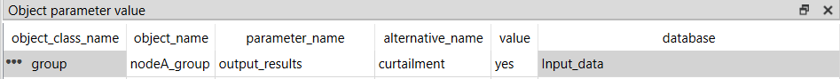
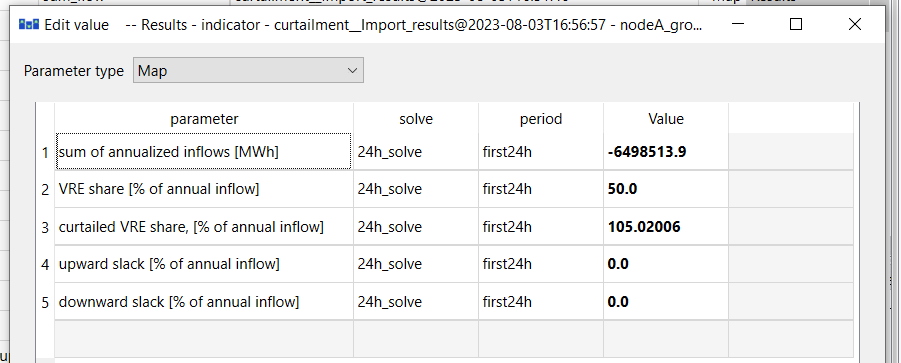
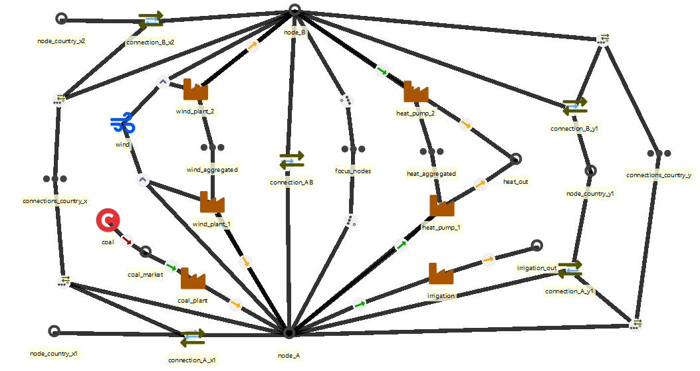
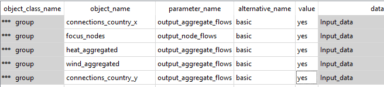
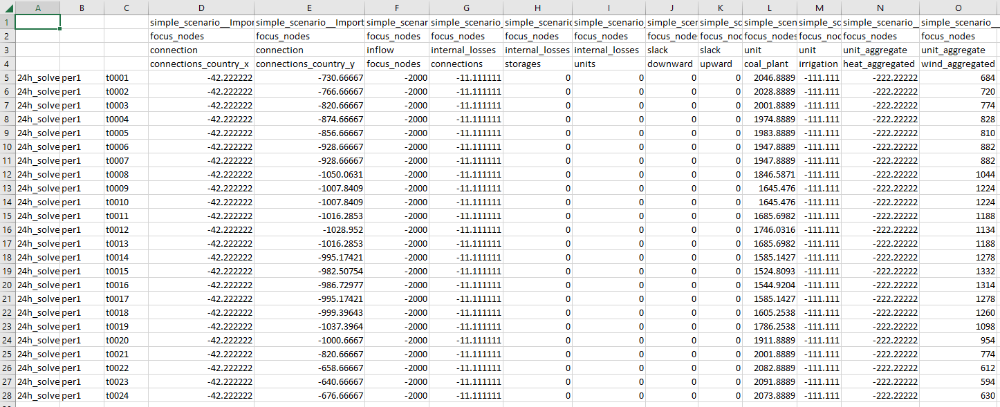
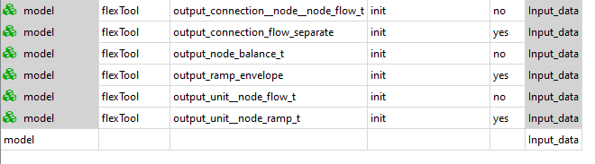

Outputs, diagnostics and Excel templates
How to see the VRE curtailment and VRE share results for a node
(non_sync_and_curtailment.sqlite) (scenario: curtailment)
When the system has profile-units with the profile_method: upper_limit, the model can curtail the unit's flow to avoid penalties.
The curtailment could take place for several reasons:
- the supply is higher than the demand and the energy cannot be stored or transferred (further)
- non-synchronous limit
- extra flow constraints have been set
- other unit specific constraint affecting how VRE units or other units are forced to behave (ramp, start-up ...)
To see the curtailment results you need a group with group__node members (not a flowGroup with flowGroup__unit__node members!). The group then needs the parameter:
print_indicators: yes
This produces the node-group summary indicator metrics — loss-of-load share, VRE share, curtailment share, excess-load share and annualised inflow — written to the Results database as group: indicator and to Excel as the group_summary table. print_indicators is the "summary" output for node groups; pair it with print_dispatch if you also want the per-timestep decomposition of the same nodes.
These changes were done to the previous non-sync example database.
Note: Curtailed VRE of demand is the curtailment in relation to the inflow (demand), so it can exceed 100% as seen in the figure. Curtailed VRE of potential VRE is the curtailment in relation to the potential VRE generation and stays within 0–100%.
The figures show the layout of the results. Their values come from an earlier version, in which the battery connection inside nodeA_group still counted towards the non-synchronous limit (the battery cycled to loosen it); the current version gives less battery cycling, less wind and more coal in this example.


How to create aggregate outputs
It is often desirable to output results that focus on particular aspects of the model. For example, you may want all flows going in and out of all electricity nodes, without the corresponding flows for other energy carriers (e.g. fuels used to produce the electricity). And if the model is large, some of those flows are easier to read when aggregated into a single column.
FlexTool splits these two concerns across a node group and a separate flowGroup:
| Intent | Set this | Role | Members |
|---|---|---|---|
| Pick a set of nodes and get a per-timestep decomposition of every flow crossing them (one column per contributing process/connection) | print_dispatch: yes on group |
the decomposition — produces group_flow_t |
group__node |
| Re-bucket a set of flows so they appear as a single aggregated band inside that dispatch output | flow_aggregator: dispatch_plots_only on flowGroup |
a dispatch-band re-bucketer — no output on its own | flowGroup__unit__node or flowGroup__connection__node |
Together they work like this: print_dispatch builds the dispatch table for its node group; while doing so it inspects every flow touching those nodes, and if any of those flows are in a flowGroup whose flow_aggregator is dispatch_plots_only (or both), their columns are collapsed into a single band named after the flowGroup. A dispatch_plots_only flowGroup produces no output of its own — it only reshapes a dispatch table that a node group is producing.
Avoid double-counting. If the same flow arc belongs to two flowGroups that are both dispatch-bound (
dispatch_plots_onlyorboth), that arc is counted twice in the node group's dispatch balance and the model emits a loud validation warning. For overlapping thematic aggregates, usestandalone_aggregator_onlyinstead — overlap is harmless there because those flowGroups report their own outputs and never feed a node-group dispatch table.
Concretely, to build a focused dispatch view for a collection of nodes:
- create or re-use a
group(e.g. electricity) - set the group's parameter print_dispatch to yes
- add the relevant nodes via
group__node(e.g. electricity__west)
Then, to collapse a collection of flows inside that dispatch view:
- create or re-use a separate
flowGroup(e.g. all_VRE) - set the flowGroup's parameter flow_aggregator to dispatch_plots_only
- add the flows via
flowGroup__unit__nodeorflowGroup__connection__node(e.g. all_VRE__wind1__west)
(Contrast with flow_aggregator: standalone_aggregator_only, which produces the flowGroup's own outputs — per-period cumulative_flow (MWh/a, scaled to a full year) / average_flow (MW) plus a signed net-flow timewise series — and does not interact with the dispatch table.)
"How to database" (aggregate_output.sqlite) aggregates results for the nodeA and nodeB. Both of the nodes have a wind power plant and nodeA has a coal power plant. The demand is divided to the electricity, heat and irrigation needs. This means that, besides an internal demand (inflow), both nodes output to the heat node while nodeA also outputs to the irrigation node. Additionally the nodes are connected to each other and the node_country_y1. The nodeA is connected to the node_country_x1 and nodeB is connected to the node_country_x2.
For the sake of the example, we are only interested in the nodeA and nodeB. Therefore, group focus_nodes is created and the nodes are added to it with group__node entities. To simplify the results, the flows from the two wind plants are aggregated as one. Same applies to the heat pumps. This is done by creating the flowGroups wind_aggregated and heat_aggregated. The flows are added to each flowGroup with flowGroup__unit__node.
Note that here the node has to be either nodeA or nodeB, not the heat node. The flowGroup only collapses columns whose node is inside the dispatch group's node set — e.g. wind_aggregated__wind_plant_1__nodeA is collapsed because nodeA is in focus_nodes. A flowGroup__unit__node row whose node is outside the dispatch group's nodes is simply ignored for that dispatch table.
Connections are simplified by creating flowGroups connections_country_x and connections_country_y and adding the relevant connections with flowGroup__connection__node. Again the node must be nodeA or nodeB to be collapsed in the dispatch output.

The focus_nodes group needs print_dispatch: yes and the unit and connection flowGroups need flow_aggregator: dispatch_plots_only.

The resulting table has the flows to the focus_nodes group from units and connections. Additionally, the internal losses of the group are calculated. These are the flows between the nodes of the group and the storage losses. Here the losses come from the connection between nodeA and nodeB. Possible slacks to balance the nodes are included too.

How to enable/disable outputs
Some of the outputs are optional. Some of these optional outputs are output by default while some are not (see below). Removing outputs speeds up the post-processing of results. The user can enable/disable them by changing the following parameters of the model entity:
output_node_balance_t: Default: yes. Produces detailed inflows and outflows for all the nodes for all timesteps. Mainly useful to diagnose what is wrong with the model.output_connection__node__node_flow_t: Default: yes. The flows between the nodes for each timestep.output_unit__node_flow_t: Default, yes. The flows from units to the nodes for each timestep.output_connection_flow_separate: Default, no. Produces the connection flows separately for both directions.output_horizon: Writes a raw dump of every LP variable and constraint over the whole horizon (forecast branches and rolling look-ahead included) tooutput_parquet/<scenario>/horizon/. The normal outputs are unchanged. Useful when constructing a stochastic or rolling model.

To get the numbers behind a plot, turn on Write plotted data (CSV) in the GUI's Png settings (or
--write-plot-data in the terminal, or write_plot_data: true in plot_settings.yaml): each plot file then gets
a CSV with the same name and the data drawn in it. See Plotted data as CSV.
How to read the LP scaling diagnostic report
Every solve runs the auto-scaling pipeline before handing the LP to the solver and writes a single audit artefact into solve_data/:
autoscale_<solve>.yaml— YAML audit (Layer 1 ranges, Layer 2 per-quantity-type plan, Layer 3user_bound_scale+ escape-tier plan)
A 1-line console verdict is also printed after each solve. The YAML covers (in order):
- Layer 1 — matrix / cost / bound / RHS log10 ranges and the cross-group max-ratio that gates whether Layers 2/3 fire
- Layer 2 — per-quantity-type power-of-2 column scalers (energy, capacity, monetary, …) with post-Layer-2 ranges
- Layer 3 — the
user_bound_scaleexponent HiGHS receives and any escape-valve folding
Auto-scaling never changes the LP optimum: every variable and constraint is unscaled back to the user's units before the solution is written out. The audit is purely diagnostic. Read it when:
- the solver runs slowly or hits its time limit
- HiGHS reports numerical trouble (ill-conditioning warnings, suspect infeasibility)
- you are about to file a bug — attaching the YAML saves a round-trip
- you are tuning a freshly-converted model and want to spot unit-mix mistakes early
- a rejected solve's hint flagged the post-autoscale LP as still wide-ranged (scaling may be implicated) — the YAML shows which layer (or which quantity type) could not compress the spread
The autoscale package lives at flextool/engine/autoscale/ (_ranges.py / _layer2.py / _layer3.py / _report.py). For the user-facing guide and tuning tips, see dev/scaling.md.
How to export a partial Excel template (parameter-group picker)
When you only need a subset of the parameter universe — say, a small dispatch sandbox without investments or stochastics — you can export an Excel template restricted to selected parameter groups instead of the full reference template. The CLI supports this via the --groups flag on the export-to-tabular command:
python -m flextool.cli.cmd_export_to_tabular \
sqlite:///input_data.sqlite \
partial_template.xlsx \
--groups "vre,storage,reserves"
The flag takes a comma-separated list of parameter_group names. Parameters outside the listed groups are dropped, and sheets with no surviving parameter columns are removed unless they are explicitly listed in always_include_with_groups in flextool/export_to_tabular/export_settings.yaml.
The following groups are always kept regardless of the --groups selection (declared as required_groups in export_settings.yaml):
timelinemodelsolve_basicsbasics
These provide the structural backbone of any FlexTool model. Implementation: flextool/cli/cmd_export_to_tabular.py and flextool/export_to_tabular/sheet_config.py. The FlexTool GUI exposes the same picker under the "Add empty FlexTool input Excel" action (3.32.0). See also Excel interface for the Excel-as-input workflow.
How to replace a dataset and keep the old one as an alternative
The idea. When new data arrives (a new demand forecast, updated cost assumptions), keep the old data and put the new values in an alternative of their own. A scenario with the new alternative on top then uses the new data, the old scenario still runs as before, and the two can be compared. Excel is handy for entering a large set of new values.
1. Export a partial template. Export only the parameter groups that hold the data you replace, as in How to export a partial Excel template:
python -m flextool.cli.cmd_export_to_tabular sqlite:///input.sqlite new_demand.xlsx --groups basics
2. Edit the workbook.
- On each sheet, keep only the rows you replace and delete the others.
- Write the name of the new alternative, for example demand_2024, in the
alternativecolumn of those rows. -
Enter the new values. A new entity also needs
entity existenceTRUE in the new alternative.Rows that keep the name of an existing alternative do not change the database (see step 3), so they can stay, but deleting them keeps the workbook easy to check.
3. Import into the same database, without purging. Copy the database first. Then:
python -m flextool.cli.cmd_read_self_describing_tabular_input new_demand.xlsx sqlite:///input.sqlite --no-purge
Always give --no-purge when adding data
Without --no-purge, the import first deletes the entities, alternatives, scenarios and parameter values of the database and then writes the workbook's data: only the rows of your partial workbook would be left.
With --no-purge, the import adds the new alternatives, entities and values. A value that the database already has for the same entity, parameter and alternative is not changed: the import prints a message for it and goes on. So an edit under the old alternative name has no effect; the new values must be in the new alternative.
4. Make the scenario. Add a scenario with the alternatives of the old scenario and demand_2024 last, in the Spine database editor or in the scenario sheet of the workbook before the import (a new column: the scenario name in the top row, then base_alternative and the other alternatives in order). The old scenario stays as it was.
5. Run and compare. Run both scenarios and open them in the comparison view of the Result viewer (key X). The AI assistant's compare_inputs checks that the two scenarios differ only in the new data, and compare_runs shows how the results differ (see The AI assistant). The same set-up runs one value change as a sensitivity: see How to run a sensitivity.
How to make a data dictionary for your model
A project team that builds a model from its own data often needs a list of every input parameter: what it means, its unit, the shapes it accepts and its default, with room to note where the team's value comes from. FlexTool writes that list, the parameter catalogue, from its own database schema, so it always matches the installed version. The same table is on the web as the Parameter catalogue (web docs) page; the FlexTool assistant answers the same questions per parameter with its describe_parameter tool.
Write it as an Excel file, and mark the parameters your input database gives values to. The command runs in FlexTool's Python environment (see Terminal workflow for how to open a terminal with it):
python -m flextool.docs_build --xlsx catalogue.xlsx \
--input-db input_data.sqlite --scenario base
The file has three sheets:
- Read me: what the file is, the FlexTool and database versions, the input database, and one line per column of the parameters sheet, including what to write in Source and How to replace.
- parameters: one row per parameter (class, parameter, definition, unit, quantity type, allowed shapes, default, allowed values, parameter group) and three empty columns for the team: Source, How to replace and Notes. The header row and the class and parameter columns are frozen, so they stay visible when you scroll; the header has filters, so you can show, for example, only the parameters the database uses.
-
classes: what each entity class (unit, node,
unit__outputNode, ...) is. -
--input-db(optional) is the input database, as a file path or as a URL (sqlite:///input_data.sqlite). It adds the columns used in DB (yeswhen any entity has a value), entities (how many) and alternatives (in which). Only the keys of the stored values are read; the file is opened read-only, so it is not changed or migrated. --scenario(optional) counts only the values in the alternatives of that scenario. An entity that the scenario switches off (its entity alternative) still counts.- A parameter that the database has but this FlexTool does not define gets its own row marked not in this FlexTool version. That happens with an older database whose parameters were renamed since: the command says so and names
flextool-migrate-database; migrate the database (or a copy of it) to see its values under the current names.
The catalogue is a dictionary, not an input template: to fill in data, use a partial Excel template or the Excel interface.